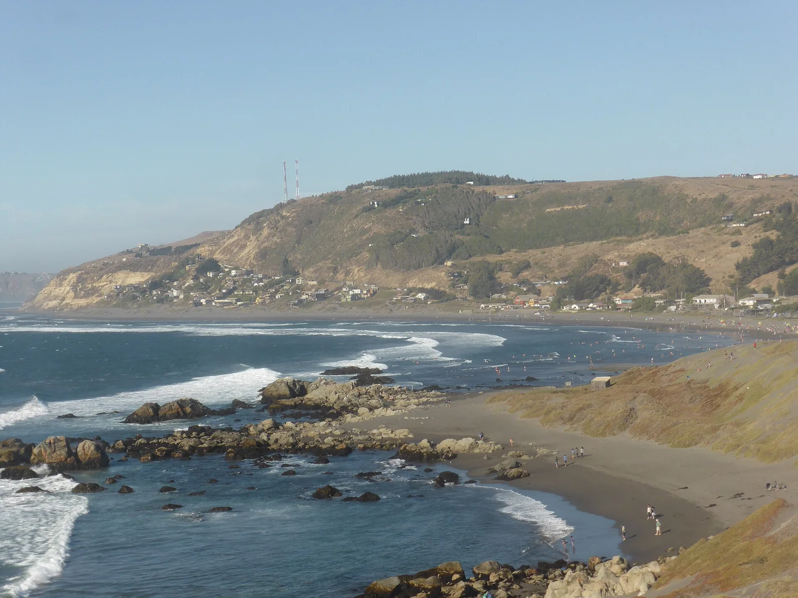

Matanzas
O’Higgins, Chili · surf, windsurf, kitesurf

Une station côtière de la commune de Navidad. Surf, windsurf et kitesurf font partie des pratiques de la région.
- Lieu
- O’Higgins, Chili
- Niveau
- Variable selon les conditions
- Activités
- surf, windsurf, kitesurf
- Type d'eau
- Mer / océan
- Coordonnées
- -33.96, -71.87 (position approximative du secteur)
Ouvrir dans Ocean Buddy Télécharger sur l'App Store
Source : Chile Travel.